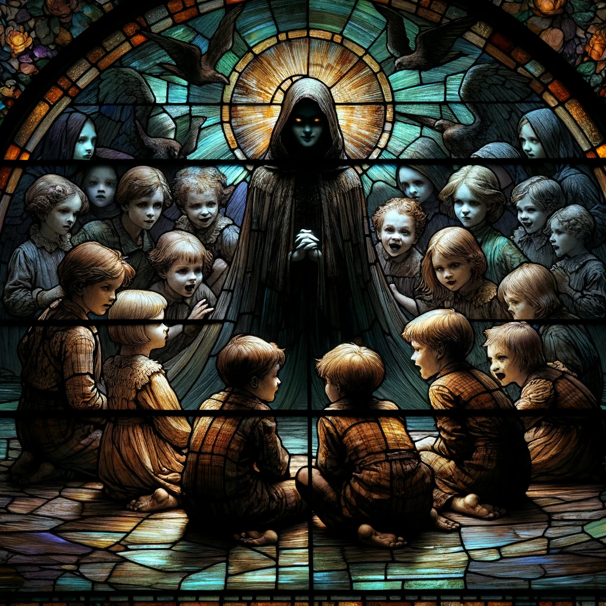

Boo Radley.
More than anything she looked like, it was who she felt like. I remembered all at once that Clarie was just like Boo Radley. Never really in sight, always in the corner of some windowview into the Sussurokawa Bed&Breakfast. A nice person, but a lousy proprietor, because it'd be a miracle if anyone ever got a breakfast there.
'It's sad, but it's no excuse.'
That was most people's take on her. That was my mom's take on her, really. Clarie and Kyrie never knew their mom. And when their dad died, Clarie shut down and turned into a shut-in. She and Kyrie inherited the inn, but Kyrie was a proper member of society. Clarie was the tragic girl who never moved on and never grew up. Her twin was a living testament to gumption, and an oh-so-very visible contrast to Clarie's 'failure.'
Not that anyone actually cared. There was just never enough to talk about in the small town. It's not like she ruined the inn or anything, either. Who was gonna stay here? On the off-chance that someone ever came from out of town, she'd mostly just appear with a key and a puzzled look, quietly mutter that checkout was at noon but no one was gonna check anyway, and then she'd disappear. Again, no one cooked any breakfast.
I remember one of the rare times I saw her, the other members of Rumueri Hill were lightly scolding her for wasting away like that. My mom, of course. But Nick, too. I still remember the consternated look she had while she nodded along and kept saying 'okay' and 'maybe.' Her face spoke for her. I don't want more people to come. While she was moping outside after I swear I heard her whisper it's not like we'll run out of money.
It drove my mom nuts. Nick... Maybe Nick was frustrated because he saw her as Hannah 2.0, or Hannah-Lite. Clarie had her issues, but I don't ever remember any nervous breakdowns. That's the unfortunate part of being just a 'little' pitiable. You're Goldilocks. You've made yourself comfortable in the bed that's just right for everyone to heap on the condescension.
Even now, while everyone else was being social outside, she was just hanging around alone in The Creepy Peach I guess.
"How come you're alone? Fight with mom?" Clarie asks rather bluntly.
Er, there's pretty much no way to say "actually, we're looking for magical journals so I can find my name again."
"Um..." I fumble a bit. "We're shy, and wanted to know more about Hannah."
"Can't you ask?" she asks us. Hm. I forgot she always spoke this tersely. Or maybe laconically is the better way of putting it. "Hannah's nice. No need to shy away."
It sounds a little absurd hearing it from her of all people. But she looks perfectly serious as she says it.
"We're just being nosy kids!" Shiori busts in from the wings. I know we just talked about trying to keep some distance from the adults, so we don't get pulled into the Tower's machinations. But Shiori's already rocking back and forth on her heels. It's obvious how happy she is. "How come you're not with the other adults Ms. Clarie?"
"Just resting inside for a bit," Clarie lies through her teeth. "Want me to get Hannah? She'll talk to kids. Always."
Shiori and I look at each other.
"We're trying to find..." I pause. Why can't I thnik of anything good?
Shiori thinks on her feet. "We're trying to find things you can't ask a lady or they'll hit you!" She thinks of the absolute worst thing to say on her feet, but I guess you can still call that quick thinking.
"Mm. Makes sense. Maybe. But Hannah doesn't hit. She's kind. And gentle."
"No! No she totally does! Totally! One time she karate chopped my head." Shiori nods sagely, as she lets Clarie know what's what.
"Must have said something insensitive as you often do. Shiori line."
"All I said was that she had a pretty name...Because she's pretty like a flower, you know?"
"And then?"
"And that Hannah's also the name of a Biblical lady who really, really wanted kids like her, 'cause her baby clock was also ticking fast."
"Right. That checks out."
Even I wanted to hit her for that one. Still, Clarie seems to take the whole conversation at face value, because she closes her eyes and shuts her ears to think a bit. I must've seen it a million times in the true past because it doesn't surprise me at all, strange as it looks.
In short order, she seems to have processed the prompt, because when she finally opens her eyes, uncovers her ears, and faces us she gives a little nod, too.
"Want to know more about Hannah... Here. I've got a notion. Let's go to the gallery. She won't mind. She'll speak to you through her art." And so Clarie motions us 'round to the back of the manor. I can't help but cast a fleeting glance back out the veranda.
"Don't worry. I'll help you. Make peace with mom. Yours, I mean."
It's a little puzzling how completely confident Clarie seems to be in her social skills. Wasn't she a shrinking violet? That's what I remember at least. Now she seems assured in her quiet.
We must be entering the sleeping wing. The floors are still mahogany, but there's a soft-apricot toned wallpaper lining the walls. It's warm. It's a color that's normally nice, and comforting, and pleasant. But it's unsettling in the context of the rest of the wing.
There's dead plants everywhere, and The Creepy Peach has really gone the extra mile to earn its name.If The Creepy Peach really were a peach, it would be one that was rotting. Everywhere are pots with dead plants, but some are dead just because they're overgrown. It's painful, obvious neglect. Painful because I can almost imagine Hannah closing her eyes as she walks past them every day, too tired, too averse to even throw them out. And Al... I guess his bones are just a mite too creaky now to do the job himself.
Isn't that... kind of weird...? For someone who so badly wants children?
"Nick, you dumb ugly bastard. I'll kill you if you keep string her along."
I hear it. but barely. I guess... their voices are echoing because we're walking through a sort of loggia? It's all open but... they should be all the way 'round the back -- well, the front from here -- and even though I just heard Al sounding like he was gonna strangle Nick, looking around that feels almost impossible.
What a weird house.
"They should really watch what they say around here..." I sigh.
Shiori just gives me a puzzled look. "Hm? Who?"
"Al. What Al just said. About Nick."
"Just said? You mean this morning when he was talking to Hannah and he said that Nick was dumber than an aphid sucking up to an ant?"
"He... what? He said that? What does that even mean?"
"Isn't that what you're talking about?"
I'm confused, but we arrive at a set of double doors to the gallery before I can put any more thought into it. Clarie gives me a look, though, like she's got something to tell me. But maybe I just imagined it. Because I also get the feeling Clarie would go the rest of her life without saying another word if she could.
Wow.
This place is huge. Rumueri Hill is full of huge houses. And it's obvious from the outside that The Creepy Peach is big. But being inside a room like this is a different story altogether. It makes you marvel, the way a place seems to get bigger when you're inside.
We're on a sort of catwalk, passing by huge stained glass windows telling some kind of story I'm not sure I want to decipher. It's like we're walking right past the clerestory of a church, getting an up-close look at the beautiful windows up top that the gaze always gets drawn to.
It's just...
I mean, that one's not so bad, right? You'd have to be looking for something creepy to see something there. I'll admit I'm one of those people. I could find a shower curtain ghastly if I got in the wrong mood.
But uh... that? There's no defending that one, right?
"Those kids look really hungry in that second picture," Shiori says thoughtfully while holding Yorick up above her, to let the streaming sunlight catch him. He's actually... a little transluscent. The light flowing through him gives him this nice tone of slightly clear, purple gray.
I don't think that's what Shiori is gazing so curiously at, though. The way she's gripping him and sort of testing his texture, it feels like she's sizing Yorick up wondering what it'd feel like to bite him.
Yorick shivers a little in response.
"You're just hungry, Shiori. If you see any children looking at you like that, then run." I really need to keep her from evil children. Shiori seems like the type that'd be horribly vulnerable to evil kids with ashen faces.
"But wouldn't we be the evil kids right now?"
Clarie says hardly a word to our chitchat as we go round and down and round and down a spiral staircase. I wonder what she and Muto would talk about if they were forced to.
In the gallery proper, we're treated to a whole different kind of art.
"Wow! Whoever painted this is a really bad artist! Or maybe just very modern?" Shiori says the quiet thing out loud. Chirps it out like a canary, really.
A man who looks like pigs are eating his feet right below the frame of the portrait is staring at us. That wide open mouth, and the crow's feet on the eyes... if you're not paying attention, you'd miss that it's supposed to be a smile.
Wait. Oh my god. Is that supposed to be...
"A portrait of Nick?" I mutter in disbelief.
Nominally it's all there. The hair is wrought with curly strokes. The man in the painting has a sort of stoutness to his upper body that could be interpreted as being fit. Even though I thought it was just some kind of abstract cartoonish proportioning a second ago.
We're all just transfixed by it. I've never seen anything like it. I hear Shiori doing tiny gasps of recognition every few seconds as she puts it together like I just did.
If it's a portrait of Nick that could only mean it was painted by...
"Hannah should go to art school," Shiori says very, very sagely. "I'll tell her that!"
"Mm. It's not great. Don't tell her that, though."
"Um, has anyone been honest? With her?" I ask.
"Nope. Al's got an eye for art. But no heart to tell her she's no Picasso. Nick has good tastes. But too cowardly to mention Hannah's complete lack of taste. Kyrie runs from the conversation. Doesn't want to say it gives her the heeby jeebies."
Well, I guess no one would want to hear their painting literally makes your skin crawl. Unintentionally.
"And you?" I ask.
"Don't like to hear cutting words. Even worse to hear myself say them." Clarie speaks very matter-of-factly. "Your mom's honest, though. Hannah hardly notices though. Your mother is often mean. Ends up being white noise."
She's right, but I feel a little upset at how bluntly she says it.
"It looks kinda like he's screaming! Like the painting from Edgar Munk," Shiori says.
"Edvard Munch," Clarie corrects her.
"Yeah! Edward Crunch."
"...not a scream. Actually. Common misconception." Clarie shyly glances at us.
I can see her ears tint red. Maybe she feels bad discoursing to kids?
"He hears it." Clarie says just that.
It's a little confusing. Very confusing, actually. Clarie would be an awful teacher, because she seems to think we get it with just that.
"H-hears what?" Shiori asks after an awkward silence.
"He hears screaming."
Any icy tingle starts running down my neck. "...whose scream?" I ask.
"Nature's scream. Nature's infinite scream."
I can feel the inside of my lip split from how hard I'm biting right now. But I don't know what to do with all the tension. Because I get it. I get it immediately. And that's... worrisome. To say the least.
In stark contrast, Shiori is almost jumping up and down.
"Ohh! Ohhhhh! I know this one! It's actually -- actually based on the sky's color in the painting, and the time period, Edmund probably heard a volc-"
"Some hack frauds think the scream is Krakatoa exploding. Silly. Needlessly impoverishes the piece. No imagination." Clarie delivers the verdict straight. Wow. Just wow.
Shiori falls silent and her cheeks puff up while she squeezes Yorick to her chest.
"...sorry. Said too much. Still do that sometimes. I'm sorry." Clarie starts rattling out the terse, anxious regrets. Why was she so confident earlier?
She's the adult here, but ...
"Shiori'll get over it," I say, trying to make Clarie feel better.(Though it's just making Shiori's cheeks puff out more.) "Please don't feel too bad about it?"
"No... not just that." Clarie looks sullenly at the ground to her side. "Said too much about your mother."
"I don't care. Say what you want about her."
"No. You looked sad."
I don't want to talk about this right now. How is every other adult like a perfect kid maestro while Clarie's just awkward? And tiresome. I feel like I just caught her flinching a bit as I think that, and that... kinda makes it more tiresome. Geez!
Whatever. I'll just deflect.
"Why'd you show us this, anyway?"
"...art is a good way to get people. Hannah's art. Says the things that can't be said out loud."
I guess whatever kinda trauma she has shows up in the absolutely bonkers way she's depicting her crush smiling?
"...look. Right there. The silver placard." Clarie points at the painting.
Consumarre est Coniungi.
It's... the same quote from the apocryphon.
At this point, it's obvious. Everyone from Rumueri must be related to the Netabares. Probably -- no, it has to be -- they're all descendants. All of us are. And that would make the town...
I thought this place was a hunting ground. This town, filled with everyone with all those strange physical traits... with residents who all seem to have the nascent features of the Kaobu... I thought that the Netabares must have been coming here to whisk people away, because we happened to have the right traits for their project.
But I was wrong. Or maybe it's better to say I didn't quite grasp how sinister their plan was. Sussurokawa isn't a hunting ground. No...
We're a farm.
But where does Hannah fit in exactly?
"I-is Hannah..." I bite my lip, not wanting to ask it out loud.
"Thirsty?" Shiori asks, but I ignore her.
"No. Hannah's a good person. Keep thinking. Keep imagining. Wait. Shiori, yes. She is thirsty." Clarie is taciturn, but she speaks fast. It's like she hates talking the way some people hate driving and avoid getting behind the wheel. They drive fast because they hate it and want it to be over with. Though, just like a bad driver, Clarie seems to crash her words a lot. "Hannah seems pathetic. But she isn't. Erm, depends what you mean. Fragile and pitiable, not contemptible. Or wretched. Please don't repeat this. It'll hurt her feelings."
Clarie's shutting her eyes and covering up her own ears again like she's trying to think smarter words into being.
"Ms. Clarie! Nick loves Hannah and Hannah loves Nick right?!" Shiori pops in breathlessly, realizing this is her one chance to hear a straightforward answer.
"Yes?" Clarie's eyes pop open. " Yes, definitely. Definitely both love."
"Love love?!" Shiori blurts.
"...Romantic love, yes. But um. Has issues. Also maybe some age difference doesn't help. Hannah used to babysit us. When we were toddlers."
"Are you serious? She's a dinosaur..." I mutter, then cover my mouth. Oops. Clarie grimaces anxiously in response.
"Not that bad. She was only a teenager." Clarie tries to preserve Hannah's womanly virtues and reputation.
"A teenaged dinosaur!" Shiori chirps.
"...Sure."
"B-but, then!" Shiori starts up like a verbose lawnmower. Why's he what... Um... like Monika calls him... a county? He's counties? Oh! He's a count-teas-"
Oh my god. Even Clarie, quiet wallflower that she is, has to grab Shiori and cover her mouth, while Shiori still tries to finish her sentence.
"...You shouldn't use words you don't understand, Shiori," Clarie's says, voice actually kinda firm. "But I have a point. Consumarre est Coniungi. Hannah takes it very seriously. What you're looking for. What this town's like. Think about it."
...Something's very weird about this conversation. Isn't it almost like... she's on the same page as we are? Does this conversation even make sense if she doesn't know about the Netabares? I should probe at her.
"Clarie, does the name Netabare mean anything to you?" I hear Shiori gasp beside me.
"...Don't know what you're talking about. But consummare, coniuingi, all that. Big Sussurokawan phrase. Like a slogan. Very pretentious and creepy. Almost a Crecer family oath. Make of it what you will."
"Is that why Hannah's so into Nick? She wants to unite with Nick? She wants to do the deed? Oh! Oh my goodness gracious she wants to eat Nick! She wants to eat him like, Tex Mex but with an S instead!" Shiori starts babbling.
Tex Sex? Sex Mex? Sex Sex? No, ugh, stop getting distracted by the relentlessly babbling brook of Shiori speech. It makes sense. There's a reason they call it consummating a marriage. And if you think about it, the ultimate form of union and completion would be...
"...Children?" I mutter.
Cheep. Cheep cheep!
All of a sudden, a noise like a bird call comes from the placard. In actuality, the placard's peeling off the wall and wobbling around, making an almost cartoonish noise.
The Codex flaps open, and a snitch flies out waiting for the placard to jump, like a mother bird waiting at the bottom of the tree for its children to finally try to fly. And the placard does jump, etching itself onto the page in silver text, while the mother bird struts around happily and proudly, before diving back into its own page.
"Meˍˍˍˍru 's Diary III
1I don't always understand why she tries to teach me things like what flowers are safe to eat, or how not to waste money. I don't like it when she says "I won't always be around." Sometimes it feels like she's trying to leave somewhere and leave me behind.
And I don't know if me being good at things is gonna make her go or make her stay.
"Meˍˍˍˍru 's Diary III
2Shiori has fun reading. It feels like she does it to get away from the world, while I do it or else my world's going to get away from me. We read some Harry Potter today. I wish I was a wizard.
It hurts a little bit though. Now, sometimes I imagine some big giant like Hagrid is going to show up and take me to Hogwarts. It makes me happy, but then it hurts because I know it won't happen. I have my mom, so even if Harry's a wizard I think I like being me better.
I tilt my head a little aggravatedly while I hear Shiori sniffle. I'm getting a little tired of reading all about me and Shiori being little loved-less waifs. I mean, I get it. Mom's not winning Mom of the Year. Not then, not now, not ever.
...The last line does make me sad though.
I'm telling you! I have pictures!
Those are edited, Al. For god's sake.
Huh?
"Meru..." Clarie says, her NPC-protocol having apparently immediately updated. "Don't... panic. Okay?"
Panic?
Ahhh, Hannah, if only you were my real daughter! Then you might listen to me when I say Nick's more worthless than melted ice cream!
Really, pops? While I'm right here?
Al! Stop bullying Nick! It hurts his feelings because he doesn't understand you're joking!
I'm not joking, Hannah.
Whose feelings? Mine? I don't care. Call me ice cream-
EEEEeEeeeEeEEEEeeeeEeEeeeeeEeeEe
Ugh... From here...?!
Melted, stinking ice cream that's been left in the car.
swishswishswishswish
I'd still drink you Nick! I'm sure it would taste great!
Hannah, PLEASE...
God. How loud are they? We're not even outside. What's wrong with this house...?!
EEEEaaeEeeeEeEEEEeaaeeeEeEeeeeeEeeEEaaEEEEaaEeEeeeEEEEEaaaeEEeeEEEaaEeeEEEEeEeEEEEEEEeeaaeeeEEaaaaAAAAAAAAAAAAAAAAAAAAAAAAAAAAAAAAAAA
But it's not just them. I can hear the fluttering of pages again, the snitches all cozying and pecking and swishing in The Codex, I can hear whispers in the air again, I can hear the sun entering its peak scream as it hits the top of noon.
It's drilling into my brain. It makes me want to rip off my ears. And I...
Realize that right now, right this moment, I'm squeezing my eyes shut and squeezing my ears just like Clarie does.
She starts talking to me. I hear her, even through my squeezing hands, even though she's talking softly.
"Meru," Clarie says, "You can hear it... can't you? Nature's scream."